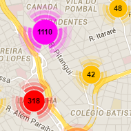
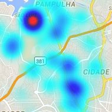

Welcome to Geo-Data Visualizer. You're probably checking out this tutorial because you want to learn more about how Geo-Data Visualizer works. It's our aim to assist the visualization and analysis of georeferenced data, making it more intuitive. We hope you'll use all the system's possibilities to obtain the maximum knowledge of data. This tutorial will walk you through the creation of simple visualizations and potentials of the system.
Geo-Data Visualizer allows the creation of interactive maps from spreadsheets. In order to create the visualizations, these spreadsheets needs to be structured in an understandable way to the system. There are few and easy steps to get your data ready to be visualized. The first step is converting your spreadsheet into .csv (comma separated values) format, so the system can get these values and separate them according to its respective meaning. The columns of the files must be structured as follow:
| Name | Latitude | Longitude | Date | Time | Load |
|---|---|---|---|---|---|
| GEO4143 | -19.946813 | -43.96893 | 12/31/2012 | 21:18:22 | 7 |
| GEO4153 | -19.946813 | -43.96893 | 01/01/2013 | 21:22:22 | 12 |
| GEO7162 | -19.946813 | -43.96893 | 01/02/2013 | 22:15:22 | 2 |
The Name column refers to the name of the location, for example a antenna name, or user name, depends on the data. The Latitude and Longitude columns are the position associated to each Name.
Date and Time are associated with the moment that occurred a event or the place where a user was located. These columns must be ordered from lowest to highest time, so the system is capable of slice the moments properly. If you are not going to analyze data between time intervals, you can leave these two columns with blank information. Finally, the Load is related to the concentration of users or intensity of phenomena, again, this depends on the data provided.
If your data is in the required patterns as mentioned above, you are ready to visualize it in the Geo-Data.
After uploading the data in the correct format, and clicking on the "Generate Map" button, the tab "Map Type" will appear in the menu for map creation. This tabs allows some customization, so it is necessary to choose the customization that best suits your data according to your needs. The options of customization are detailed below.
The first step is choosing the Map Type of your visualization. There are three different types of maps available, the first is the Marker map. This is one of the most intuitive and used maps, where a marker is placed on the correspondent position of the database. Clicking on a marker enables users to visualize information about the marker present in the uploaded data. The color of the marker is also customizable. It important to notice that if two markers are placed in a same location, the information displayed on the click will correspond to the last marker placed.
The Cluster map is the second option of visualization. This map group data points that are close and display the total for each group. This map has the advantage of displaying exact numbers, differently of heatmaps and markers. Clicking on a cluster enables users to visualize information about the cluster. Cluster maps work great when dealing with large data.
The last option of map available is the Heatmap map, which is useful to show density of the provided input data. This type, just like the cluster, is great when dealing with large data because the users can get instant knowledge at a glance. It renders faster than the other two types of maps, showing better results when dealing with large data and displaying with time interval. The opacity, gradient color and radius used to create the map are customizable.
The "Map Style" is another customizable setting, where the user can choose between Default, Satellite, Dark, Light, and Road map visualizations, improving the visualization and appearance of maps.
Geo-Data allows the analysis using Time Interval. The allowed intervals are Minute, Hour, Day, Month, Year, or Static maps where no interval is used. When selecting a interval, a player and a slider appears where you can select the corresponding moment on the slider. As previously stated, the Date and Time columns of the data must be ordered from lowest to higher, in order to the player and slider work properly.
The generated maps can present useful insights of the data, and to improve such knowledge, we perform statistical analysis of the data that is presented next.
Geo-Data performs and display statistical analysis of the data. If the time interval is enabled, this analysis correspond for each moment of the timeline. The following analysis are performed:
,where a = population of the input data
| Mean = | å x |
| n |
where n = number of values
For an odd number of values
| Median = | (n+1) | th item |
| 2 |
For an even number of values
| Median = | n | th item + | n | +1 th item |
| 2 | 2 | |||
| 2 | ||||
where n = number of values
| Skewness = | å (Mean - xi)3 |
| (n-1) (Standard Deviation)3 |
where n = number of values
where n = number of values
| Quartile Deviation = | ( Upper Quartile - Lower Quartile ) |
| 2 |
| Sample Variance (s)2 = | å (x - Mean)2 |
| n - 1 |
where n = number of values
| Coefficient of Variation = | Standard Deviation |
| Mean |
| Coefficient of Range = | (Max - Min) |
| (Max + Min) |